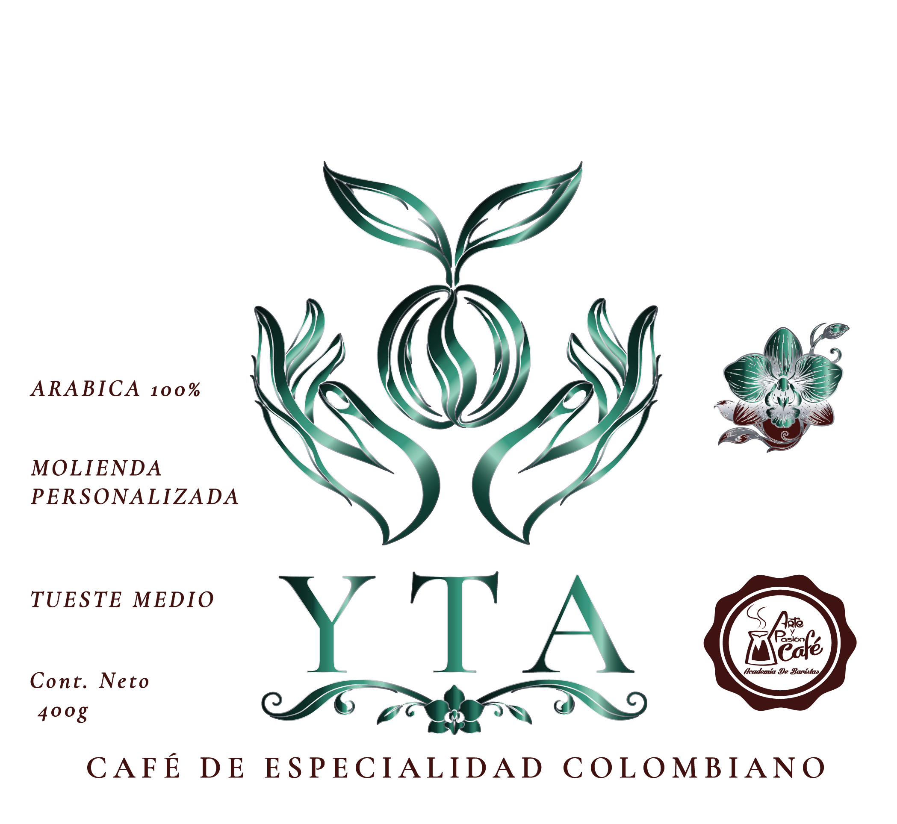
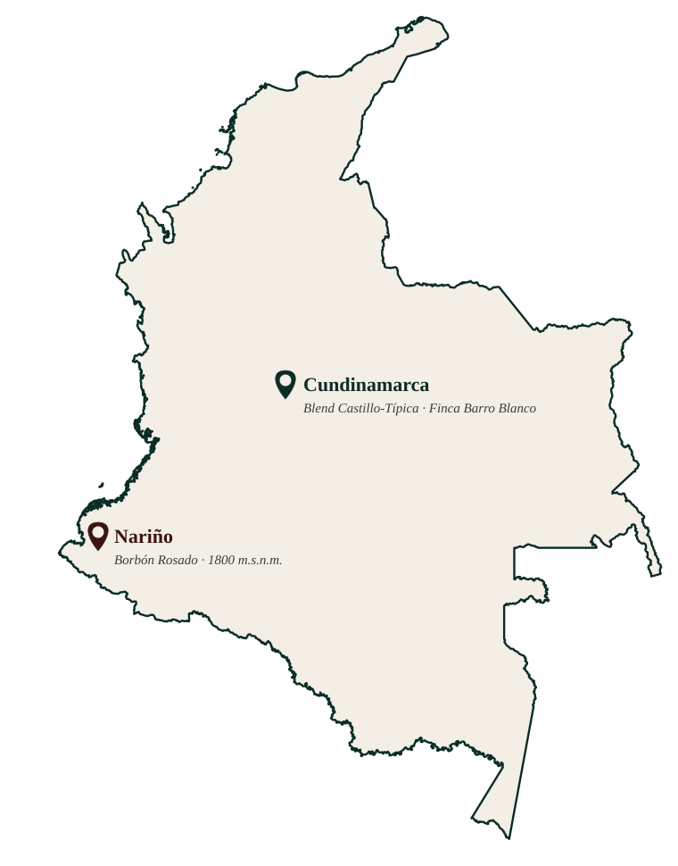

Blend Castillo–Típica
- Finca: Barro Blanco
- Caficultor: Dago Martínez
- Altitud: 1550 m.s.n.m.
- Beneficio: Lavado
En alianza para el concurso al mejor café tostado de más regiones cafeteras de Cundinamarca, edición 2025.
Consultar este café
Tradición hecha a mano
Café de especialidad colombiano · Arábica 100% · Tueste artesanal
En lengua muisca, YTA significa mano.
La mano que siembra la vida en el corazón de la tierra. La mano que cuida el fruto, que espera con paciencia y cosecha con respeto. La mano que transforma el grano, revelando aromas, memorias y origen.
La mano que prepara el café, que reúne historias y acerca corazones. Porque detrás de cada cosecha hay dedicación. Detrás de cada taza hay tradición. Y detrás de cada encuentro, siempre habrá una mano.
— YTA, tradición hecha a mano.
Dos lotes, dos historias de origen. Café de especialidad colombiano, tostado con A&P Tostadores y certificado por un barista Q Arábica Grader.
En alianza para el concurso al mejor café tostado de más regiones cafeteras de Cundinamarca, edición 2025.
Consultar este caféLote en proceso de documentación completa de finca y caficultor.
Consultar este café
Arábica 100% · Molienda personalizada · Tueste medio · Cont. neto 400 g
Descargar catálogo en PDFCada lote de YTA viene de una región y una mano específica de Colombia.

¿Quieres café para tu casa, tu cafetería o tu negocio? Escríbenos.
Tienda física · E-commerce · Mayorista HORECA · Regalos corporativos y eventos